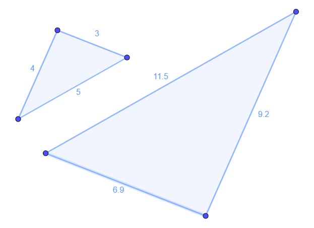
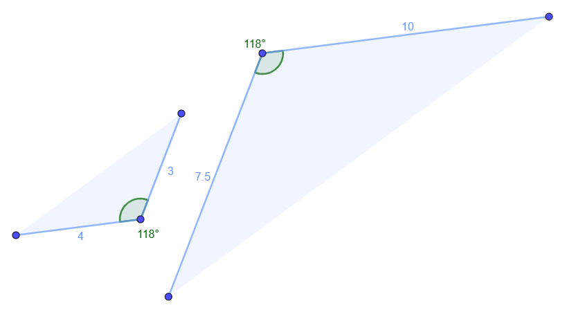

Amb els triangles, és tres vegades millor
Si ho recordeu, tots hauríem d'haver copiat aquest requadre, cert?
| Dos polígons són semblants si tenen tots els angles iguals I els costats proporcionals. (s'han de complir les dues condicions al mateix temps) |
Molt bé, ara ho adaptarem als triangles! Hem insistit que amb ells és més fàcil, per què? Perquè no fan falta les dues condicions!
| Dos triangles són semblants si tenen tots els angles iguals O els costats proporcionals. (basta mirar un dels dos, si passa una, passa l'altra!) |
Però això encara no és prou bó! De vegades no sabem els 3 costats, i si coneixem dos angles, hem dit que també sabem el tercer... Per tant, hem d'aprendre tres criteris de semblança. Això és, tres maneres diferents de decidir si dos triangles són o no semblants entre ells. Anem a veure'ls!
| C1: Dos triangles són semblants si tenen 2 angles iguals |
Només 2? Clar! Si tenen 2 angles iguals, el tercer també ha de ser igual, perquè entre tots han de sumar 180º! (A això li direm que els dos primers angles determinen el tercer).
 . . |
En aquest cas, és cert que només coneixem dos angles, però com que són iguals, podem dir: Pel C1 (Criteri 1), com que tenen 2 angles iguals, són triangles semblants Si voleu saber perquè, és molt fàcil veure que ara l'angle desconegut es podria fer així: \[? = 180-39-72= 69^\circ \] Així que en realitat, té 3 angles iguals. |
| C2: Dos triangles són semblants si tenen els 3 costats proporcionals |
Aquest no té massa secret. Si tenen 3 costats proporcionals, també han de tenir angles iguals. I el darrer?
| . |
Ara, s'ha de comprovar si són o no proporcionals. Per fer-ho, sempre heu de comparar (dividir) els corresponents. De vegades es pot mirar segons si estan al costat d'un angle o un altre, però si sembla un triangle escalè, jo recomano pensar-ho més fàcil. Dividiu gran entre gran, mitjà entre mitjà, i petit entre petit. Si els tres surten iguals, són proporcionals i per tant els triangles són semblants! En aquest cas, \(\frac{11.5}{5}=\frac{9.2}{4}=\frac{6.9}{3} = 2.3 \) Pel C2 (Criteri 2), com que tenen 3 costats proporcionals, són triangles semblants |
| C3: Dos triangles són semblants si tenen 2 costats proporcionals i l'angle que formen igual |
Això és nou, què vol dir? Vol dir que si podeu veure que hi ha un angle igual, ens hem de fixar entre quins costats es troba, i comprovar si aquells són o no proporcionals!
| . |
Aquest pot semblar un poc raro, ja que mescla angles i costats. Però la idea, és que si sabem un angle i els dos costats adjacents (els que el toquen), ja tenim el triangle fet! (Realment diríem que determinen el triangle). En aquest cas, per fer-ho més clar, no he acabat de dibuixar el triangle, però està clar que el tercer costat no es pot escollir ja. Per tant, ens fixem a l'angle conegut, 118º, i podem veure que és igual als dos triangles. Ara, mirem costats, llarg entre llarg i petit entre petit: \[\frac{10}{4}=\frac{7.5}{3} = 2.5 \] Pel C3 (Criteri 3), com que tenen 2 costats proporcionals i l'angle que formen igual, són triangles semblants |